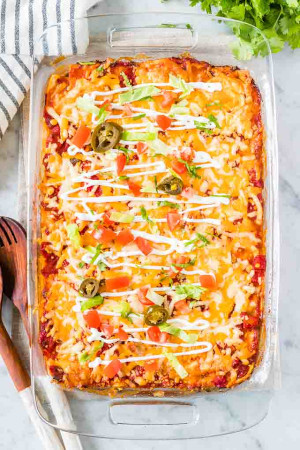

jump to recipe

Description
Lasagna is the perfect crowd-pleasing casserole made with tortillas, taco meat, salsa, and cheese! Top it with guacamole and sour cream for a delicious Mexican dinner that everyone will love.
Ingredients
- 1 pound lean ground beef
- 1 Tbsp olive oil
- 1 medium red onion, chopped
- 2 clove garlic, minced
- 1/4 cup taco seasoning
- 1/2 cup water, more as needed
- 1 can green chiles, (optional)
- 1 can black beans, drained
- 12 flour tortillas, 6-inch
- 24 ounces salsa
- 1 cup sour cream
- 3 cup shredded Mexican Cheese Blend
Instructions
- Preheat oven to 375 F (190 C) and grease the bottom of a 9×13-inch baking dish.
- In a large skillet over medium-high heat, cook ground beef until browned and completely cooked through, breaking it into small pieces as it cooks. Transfer beef to a bowl and set aside. Discard the remaining grease.
- In the same skillet, heat olive oil over medium heat, add onion and cook until soft, about 4 minutes. Add garlic and cook for 1 more minute.
- Add cooked ground beef, taco seasoning, green chiles, and beans. Pour in 1/2 cup of water and bring to a simmer, stirring occasionally. Add 1-2 Tbsp more water if needed. Remove pan from heat.
- Use 3 tacos cut in half and 1 whole taco to line the baking dish (see picture above). Spread 1/3 of the salsa on top and then 1/2 of the meat mixture. Drop 1/2 of the sour cream over the meat and spread out with a spatula. Top with 1 cup of cheese. Repeat layers. Top with 4 tortillas, remaining salsa, and cheese.
- Bake for 30-40 minutes, or until the cheese is melted and lightly browned.